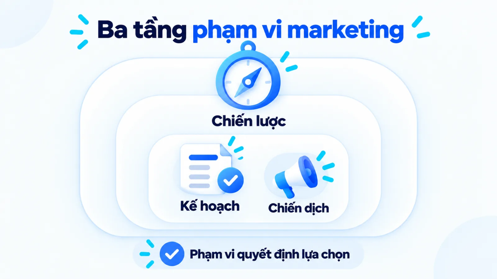
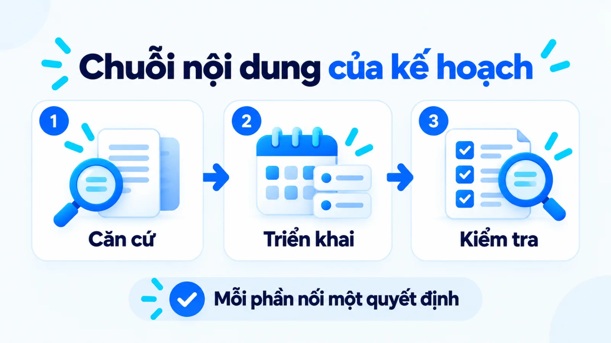
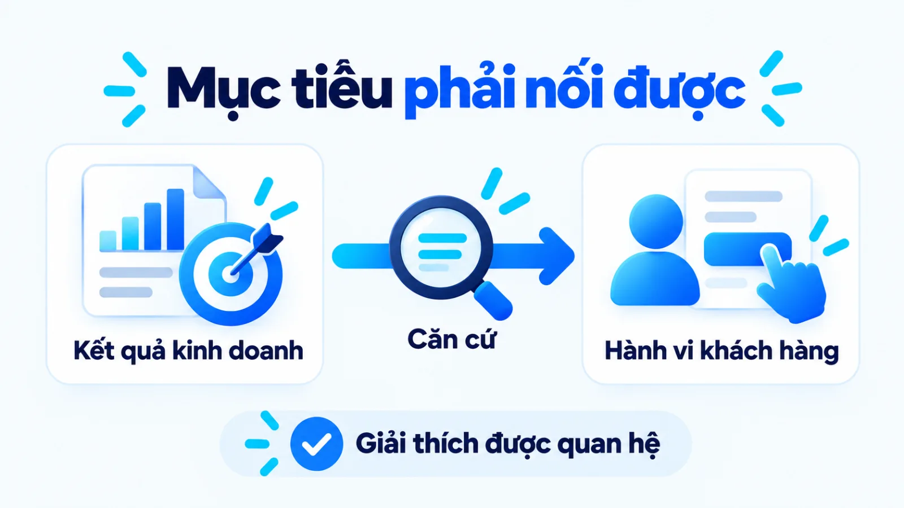
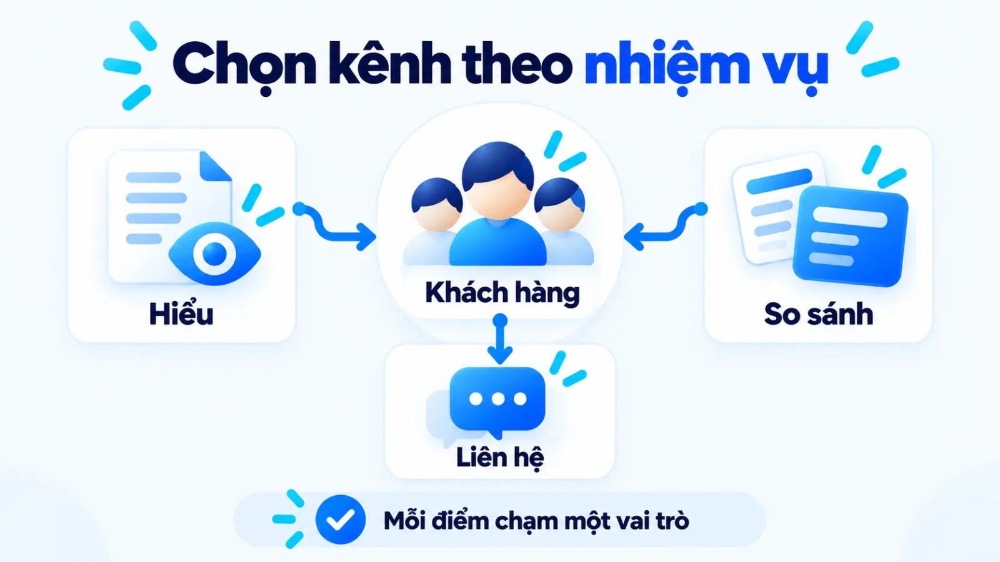

Kế hoạch marketing là gì? Cách lập để triển khai được
Kế hoạch marketing là tài liệu chuyển mục tiêu và lựa chọn chiến lược thành hoạt động, nguồn lực, trách nhiệm và cách đo trong kỳ thực hiện. Tôi là Lê Tuấn Việt, Marketing Leader tại TAKI Group. Bài viết dùng hướng dẫn quản trị công khai để đề xuất trình tự lập bản kế hoạch, kèm bảng phân biệt và checklist kiểm tra tính khả thi cho doanh nghiệp vừa và nhỏ tại Việt Nam.
- Đăng ngày
- Cập nhật

Tóm tắt nhanh
- Chiến lược xác định hướng lựa chọn; kế hoạch nối hướng đó với hoạt động, ngân sách, trách nhiệm và thời điểm thực hiện.
- Dữ liệu nền và giả định cần được tách rõ. Khi thiếu dữ liệu, nên thu hẹp phạm vi thử trước khi tăng mức cam kết nguồn lực.
- Mỗi bước lập kế hoạch cần có đầu ra và dấu hiệu hoàn tất để người thực hiện biết khi nào có thể chuyển sang bước tiếp theo.
- Kết quả lệch dự kiến cần được kiểm tra từ dữ liệu và việc thực thi trước khi đổi kênh, ngân sách hoặc mục tiêu kinh doanh.
Mục lục bài viết8 phần
Kế hoạch marketing là gì?
Kế hoạch marketing là tài liệu nối mục tiêu kinh doanh và lựa chọn chiến lược với hoạt động, nguồn lực, trách nhiệm, thời hạn và cách đo. Bản kế hoạch giúp người duyệt và người triển khai hiểu cùng một hướng hành động.
Business Queensland phân biệt chiến lược bằng lý do và hướng lựa chọn, còn kế hoạch bằng cách thực hiện và thời điểm. Đây là hướng dẫn quản trị tại Australia, không phải bằng chứng khảo sát về hiệu quả tại Việt Nam.
Chiến lược, kế hoạch và chiến dịch khác nhau thế nào?
Bảng dưới giúp xác định tài liệu đang cần làm, tránh dùng lịch chiến dịch để thay cho quyết định về thị trường và nguồn lực.
| Tài liệu | Phạm vi và quyết định | Đầu ra và thời hạn |
|---|---|---|
| Chiến lược marketing | Thị trường, khách hàng, giá trị khác biệt và hướng cạnh tranh | Lựa chọn định hướng; xem lại khi giả định nền thay đổi |
| Kế hoạch marketing | Phối hợp hoạt động, ngân sách, nhân sự và đo lường | Cam kết triển khai trong kỳ đã chọn; rà soát theo kết quả |
| Kế hoạch chiến dịch | Đối tượng, thông điệp và hoạt động cho mục tiêu hẹp hơn | Lịch triển khai và kỳ đánh giá riêng của chiến dịch |

Dấu hiệu tài liệu mới dừng ở lịch hoạt động
Lịch đăng bài hoặc lịch quảng cáo mới cho biết đội ngũ làm gì. Nếu chưa giải thích hoạt động phục vụ ai, giải quyết vấn đề nào và cần nguồn lực gì, tài liệu còn thiếu căn cứ để lựa chọn hoặc cắt bỏ.
Chiến dịch có thể nằm trong bản kế hoạch chung. Khi thiết kế nhiều chiến dịch, cần kiểm tra chúng có tranh cùng ngân sách, nhân sự hoặc thời điểm tiếp cận khách hàng hay không.
Bản kế hoạch cần những nội dung nào?
Bản kế hoạch cần nối bối cảnh, mục tiêu và khách hàng ưu tiên với cách tiếp cận, nguồn lực và hệ đo lường. Mỗi phần phải cung cấp căn cứ cho quyết định tiếp theo.
Hướng dẫn của business.gov.au yêu cầu làm rõ thị trường mục tiêu và lý do khách nên chọn sản phẩm. Với từng hoạt động, hướng dẫn còn nêu đối tượng, kênh, nội dung thực hiện, chi phí dự kiến và thời điểm.
- Căn cứ lựa chọn: Vấn đề kinh doanh, dữ liệu nền, mục tiêu, nhóm khách hàng và nhu cầu ưu tiên.
- Cam kết triển khai: Thông điệp, vai trò kênh, đầu việc, chi phí, tiến độ, người thực hiện và người duyệt.
- Cơ chế kiểm tra: Chỉ số, nguồn dữ liệu, kỳ đo, người đọc kết quả và điều kiện điều chỉnh.

Chỉ số hiệu suất trọng yếu, viết tắt là KPI, cần phản ánh mục tiêu đang theo đuổi. Mỗi KPI nên có định nghĩa đủ rõ để người thu thập dữ liệu và người đánh giá không dùng những cách đếm khác.
Mức chi tiết phù hợp là mức người nhận việc hiểu đầu ra và giới hạn quyết định của mình. Bản tóm tắt dành cho người duyệt có thể ngắn; phụ lục triển khai cần giữ những thông tin giúp giao việc và nghiệm thu.
Cần chuẩn bị gì trước khi bắt đầu?
Trước khi lập bản kế hoạch, cần xác nhận vấn đề kinh doanh, dữ liệu nền và giới hạn nguồn lực. Dữ liệu nền, hay baseline, là mốc hiện trạng dùng để đối chiếu kết quả về sau.
Hãy gom dữ liệu bán hàng, khách hàng, chi phí và phản hồi từ người trực tiếp phục vụ khách. Khi dùng dữ liệu khai báo và dữ liệu hành vi, cần hiểu sự khác nhau giữa zero-party data và first-party data để biết từng nguồn trả lời được điều gì thực tế.
- Vấn đề: Kết quả nào đang chưa đạt, xuất hiện ở nhóm khách nào và trong kỳ nào?
- Thị trường: Nhu cầu, lựa chọn cạnh tranh và phản hồi nào đã có căn cứ kiểm chứng?
- Nguồn lực: Ngân sách, nhân sự, năng lực bán hàng và thời gian nào thực sự có thể dùng?
- Khoảng trống: Dữ kiện nào đã biết, điều nào còn là giả định và cần kiểm tra bằng cách nào?
Hướng dẫn của Chính phủ Canada yêu cầu ghi giả định đi kèm dự báo. Nếu dùng AI để tổng hợp tài liệu, vẫn cần đối chiếu nguồn gốc trước khi biến nội dung tổng hợp thành căn cứ phân bổ.
Kết thúc khâu chuẩn bị, người lập cần giải thích được vì sao chọn vấn đề này trước. Danh sách mong muốn chưa có thứ tự ưu tiên sẽ khiến mọi kênh đều có vẻ cần thiết.
Lập kế hoạch marketing từ mục tiêu đến lựa chọn chiến lược thế nào?
Các bước đầu cần chuyển dữ liệu thành vấn đề rõ, mục tiêu đo được, khách hàng ưu tiên và hướng tiếp cận. Khung bảy bước trong bài là cách nhóm công việc để thực hành, không phải chuẩn bắt buộc cho mọi doanh nghiệp.
Bước 1: Xác định vấn đề và dữ liệu nền
Đối chiếu kết quả kinh doanh với kỳ tham chiếu, rồi khoanh vùng nơi xuất hiện chênh lệch. Tách hiện tượng quan sát được khỏi nguyên nhân đang suy đoán; thiếu đơn hàng chưa đủ để kết luận doanh nghiệp cần tăng quảng cáo.
Đầu ra: Phát biểu vấn đề kèm dữ liệu nền và giả định cần kiểm. Hoàn tất khi người duyệt nhận ra phần đã biết và phần chưa được chứng minh.
Bước 2: Chuyển mục tiêu kinh doanh thành mục tiêu marketing
Từ kết quả kinh doanh mong muốn, xác định hành vi khách hàng mà marketing có thể tác động. Nếu mục tiêu liên quan đến yêu cầu tư vấn, cần thống nhất thế nào là yêu cầu hợp lệ và bộ phận nào xác nhận chất lượng.
business.gov.au về thiết lập mục tiêu lưu ý tính khả thi phải được kiểm tra theo thời gian, tiền và nguồn lực. Mức mục tiêu cần có căn cứ từ dữ liệu hiện trạng hoặc giả định thử nghiệm.
Đầu ra: Mục tiêu có chỉ số, mức cần đạt, thời hạn và nguồn kiểm chứng. Hoàn tất khi giải thích được quan hệ dự kiến với kết quả kinh doanh.

Bước 3: Chọn khách hàng và nhu cầu ưu tiên
Đối chiếu dữ liệu khách hàng với khả năng phục vụ để chọn nhóm có nhu cầu phù hợp. Ghi rõ rào cản mua và hành động mong muốn; nhóm ưu tiên phải đủ cụ thể để chọn được thông điệp và điểm tiếp cận.
Đầu ra: Nhóm khách hàng, nhu cầu và lý do ưu tiên. Hoàn tất khi giải thích được vì sao những nhóm khác chưa được phân bổ cùng mức nguồn lực.
Bước 4: Chốt thông điệp và vai trò của kênh
Chọn điều cần giúp khách hiểu hoặc tin trước khi hành động, rồi giao nhiệm vụ cho từng kênh. Kênh giúp khách nhận ra vấn đề có nhiệm vụ khác kênh giúp so sánh phương án hoặc gửi yêu cầu mua.
Thông điệp cần nhất quán với giọng thương hiệu; cách triển khai từng bài có thể thay đổi theo góc tiếp cận nội dung. Tôi ưu tiên thu hẹp kênh khi đội ngũ chưa đủ khả năng duy trì chất lượng và phản hồi.
Đầu ra: Thông điệp cốt lõi và nhiệm vụ của từng kênh. Hoàn tất khi mỗi kênh có đóng góp dự kiến đủ rõ để đánh giá về sau.

Hoàn thiện kế hoạch marketing để triển khai và đo lường thế nào?
Các bước còn lại cần biến lựa chọn thành ngân sách, công việc có người chịu trách nhiệm và cơ chế kiểm tra. Chỉ số phải giúp quyết định việc tiếp theo khi kết quả lệch dự kiến. Ở cấp kênh trả phí, bạn có thể lập kế hoạch chạy quảng cáo Facebook để gắn ngân sách với ngưỡng điều chỉnh.
Bước 5: Phân bổ ngân sách và nguồn lực
Tính chi phí từ các hoạt động cần để phục vụ ưu tiên đã chọn, rồi đối chiếu với trần chi và công suất đội ngũ. Tính cả công sản xuất, phối hợp, thuê ngoài và xử lý khách, tránh chỉ cộng tiền quảng cáo.
Hướng dẫn lập ngân sách của business.gov.au phân biệt ngân sách dự định thu chi với dự báo dựa trên dữ liệu hiện tại. Khi dự báo vượt khả năng chi trả, cần điều chỉnh phạm vi hoặc tiến độ trước khi cam kết triển khai.
Đầu ra: Ngân sách kèm giả định và nguồn lực thực hiện. Hoàn tất khi tổng nhu cầu nằm trong giới hạn được duyệt và các khoản phụ thuộc đã được ghi rõ.
Bước 6: Chốt đầu việc, tiến độ và trách nhiệm
Tách hoạt động thành đầu việc có sản phẩm bàn giao, người thực hiện, người duyệt và hạn hoàn thành. Ghi cả điều kiện phụ thuộc, chẳng hạn thông tin sản phẩm phải được xác nhận trước khi duyệt nội dung.
Đầu ra: Lịch việc có chủ sở hữu và tiêu chí nghiệm thu. Hoàn tất khi không còn đầu việc quan trọng thiếu người nhận hoặc chờ dữ liệu chưa có lịch bàn giao.
Nếu dùng AI để hỗ trợ tổng hợp hoặc soạn nháp, cần chốt đầu vào và điểm kiểm tra trong quy trình làm việc có AI. Công sửa và công duyệt vẫn cần được tính vào năng lực thực hiện.
Bước 7: Thiết lập cách đo và kiểm tra trước khi trình duyệt
Chốt định nghĩa KPI, dữ liệu nền, mục tiêu, nguồn dữ liệu, kỳ đo và người chịu trách nhiệm. Mô phỏng cách đọc kết quả lệch để kiểm tra xem mỗi tín hiệu có dẫn tới hành động cụ thể.
Dùng bảng sau để tách tín hiệu quan tâm, hành vi đạt chuẩn và kết quả đã xác nhận. Kỳ đo cần theo chu kỳ mua và độ trễ dữ liệu của doanh nghiệp.
| Tầng chỉ số | Cách đếm, nguồn và trách nhiệm | Kỳ đo và quyết định |
|---|---|---|
| Tương tác | Đếm hành vi đã định nghĩa; dữ liệu website; phụ trách kênh tổng hợp | Theo kỳ nội dung; kiểm tra khả năng tiếp cận, chưa kết luận doanh thu |
| Yêu cầu đạt chuẩn | Đếm yêu cầu đáp ứng tiêu chí chung; sổ khách; bán hàng xác nhận | Theo kỳ tiếp nhận; xem lại đối tượng, thông điệp và phản hồi |
| Kết quả kinh doanh | Cộng doanh thu đã xác nhận; dữ liệu bán hàng; tài chính đối soát | Theo kỳ kinh doanh; xem lại hiệu quả nguồn lực và giả định |
Khi tính tỷ lệ yêu cầu đạt chuẩn, lấy số yêu cầu đạt chuẩn chia tổng yêu cầu trong cùng kỳ và cùng nhóm. Chuyển đổi vi mô giúp tìm điểm cần kiểm tra; dark social nhắc rằng hành trình còn có điểm chạm khó quan sát. Dữ liệu phân bổ theo nguồn chưa tự chứng minh quan hệ nhân quả.
Trước khi trình duyệt, dùng checklist sau để kiểm tra tính khả thi của toàn bộ bản kế hoạch.
- Mục tiêu có chỉ số, thời hạn và nguồn kiểm chứng?
- Giả định quan trọng có cách và thời điểm kiểm tra?
- Ngân sách cùng khối lượng việc nằm trong khả năng thực hiện?
- Đầu việc có người làm, người duyệt và điều kiện bàn giao?
- KPI có người đọc và hành động khi lệch dự kiến?
Đầu ra: Bản kế hoạch đã mô phỏng được một kỳ đánh giá. Hoàn tất khi các câu trả lời chưa rõ đã được xử lý hoặc chuyển thành điều kiện trình duyệt.
Bản kế hoạch rút gọn cho doanh nghiệp nhỏ trông thế nào?
Ví dụ biên tập, không phải kết quả khách hàng thật: doanh nghiệp nội thất nhận nhiều câu hỏi nhưng ít yêu cầu tư vấn phù hợp. Đội ngũ cần kiểm tra đối tượng và khâu tiếp nhận trước khi mở thêm kênh mới.
Ưu tiên chất lượng yêu cầu tư vấn
Trong ví dụ biên tập này, giả định doanh nghiệp có trang dịch vụ, dữ liệu bán hàng cơ bản và nhân sự kiêm nhiệm. Điểm chưa rõ là khách chưa phù hợp hay chưa hiểu phạm vi dịch vụ và mức ngân sách cần chuẩn bị.
Hướng thử là làm rõ thông tin lựa chọn trên trang dịch vụ và thống nhất câu hỏi tiếp nhận. Người phụ trách nội dung chuẩn bị bản sửa; bán hàng xác nhận tiêu chí khách phù hợp; người quản lý duyệt phạm vi và chi phí.
Ngân sách được tính từ công sửa nội dung, xử lý dữ liệu và công suất phản hồi. Do nguồn lực hạn chế, doanh nghiệp tạm hoãn mở kênh mới; kỳ đánh giá được chốt theo thời gian đủ để nhận và xác minh yêu cầu mới.
Nếu yêu cầu phù hợp vẫn ít, cần kiểm tra dữ liệu có đầy đủ và nội dung có được triển khai đúng trước. Khi thực thi đúng mà khách vẫn không phù hợp, mới xem lại nhóm tiếp cận và thông điệp; nếu khách phù hợp nhưng chưa mua, cần đối chiếu khâu tư vấn và khả năng cung cấp.
Câu hỏi thường gặp về kế hoạch marketing
Nên chọn kỳ kế hoạch theo tiêu chí nào?
Kỳ kế hoạch nên theo chu kỳ mua, khả năng dự báo và thời gian cần để quan sát kết quả. Doanh nghiệp có thể giữ định hướng dài hơn và chia kỳ thực hiện ngắn hơn; nhịp kiểm tra cần phù hợp với tốc độ phát sinh dữ liệu.
Doanh nghiệp mới chưa có dữ liệu nền nên bắt đầu thế nào?
Doanh nghiệp mới nên bắt đầu bằng phạm vi thử nhỏ với giả định được ghi rõ. Dùng thông tin thị trường và trao đổi với khách hàng để chọn điều cần kiểm chứng, sau đó lấy kết quả thực tế làm mốc cho kỳ tiếp theo.
Ai nên lập và ai nên duyệt kế hoạch marketing?
Người phụ trách marketing nên điều phối việc lập kế hoạch, còn người có thẩm quyền phân bổ nguồn lực duyệt các cam kết. Bán hàng, tài chính và vận hành cần xác nhận dữ liệu cùng khả năng thực hiện trước khi bản kế hoạch được chốt lại.
Bản kế hoạch nên dài bao nhiêu trang?
Độ dài nên theo mức phức tạp của quyết định và công việc cần phối hợp. Có thể giữ bản chính ngắn để người duyệt thấy lựa chọn, đánh đổi và nguồn lực; dữ liệu chi tiết đặt ở phụ lục để người thực hiện tra cứu.
Có nên dùng chung kế hoạch cho nhiều sản phẩm?
Có thể dùng chung khi các sản phẩm phục vụ nhóm khách hàng và hệ kênh tương tự. Nếu định vị, chu kỳ mua hoặc nguồn lực khác biệt đáng kể, nên tách phần triển khai để chỉ số và trách nhiệm vẫn truy được về từng ưu tiên.
Khi nào nên thuê ngoài hoạt động marketing?
Thuê ngoài phù hợp khi doanh nghiệp thiếu chuyên môn hoặc công suất cho đầu việc đã xác định rõ. Trước khi giao việc, cần chốt đầu ra, tiêu chí nghiệm thu, dữ liệu bàn giao và người duyệt; quyền quyết định ưu tiên vẫn thuộc về doanh nghiệp.
Kết luận
Bản kế hoạch có thể triển khai cần giải thích được mục tiêu, ưu tiên khách hàng, nguồn lực và cách kiểm tra kết quả. Trước khi trình duyệt, hãy chọn một hoạt động và lần ngược về căn cứ lựa chọn; nếu không nối được, hoạt động đó cần làm rõ hoặc cắt bỏ.
Khi thực tế thay đổi, cập nhật phần có bằng chứng cho thấy cần sửa. Các quyết định về mục tiêu, ngân sách và phối hợp được kết nối trong chuyên mục Quản trị Marketing để người đọc tiếp tục đối chiếu bài toán vận hành.